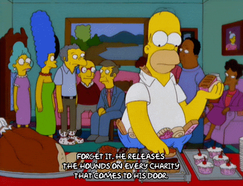

DevProd Adventure
Context
This is a presentation I gave at Angular Ventures in 2024. It’s about the new-ish and emerging concept of Developer Experience, and what I’ve learned about it over the last year of doing it.
It’s a Reveal.js presentation, so you can view it in your browser on Desktop
only. Use the arrow keys and Esc to navigate, and press s to see the speaker
notes.
Presentation
Developer Experience
The adventure begins...
Shay Nehmad for Angular Ventures, 2024
Developer Experience
Who am I?
Shay Nehmad

Ex-Reco, currently Engineering Enablement & Experience @Orca Security
Developer Experience
Who are you?

The adventure begins...
Our quest today: understanding and improving the developer journey in your startup. Every decision will be a dice roll that impacts your journey. You'll learn how to defer hiring me for as long as you can ;)
The adventure begins...
To non-technical people on the call
This workshop is about removing barriers. Imagine something going wrong on a customer call, all the time. Or some toil you'd rather delegate to an assistant.
The adventure begins...
To non-technical people on the call
D&D is a game for nerds. Like your developers!
Your party enters Dev-onia City's gates, in the realm of Codevale...
Your party enters Dev-onia City's gates, in the realm of Codevale...

☕️ Coffee, potion (common)
Add 1d4 INT for two hours, stacks 2x
Roll CON or find the nearest bathroom.
Meet your party!
- üé´ Ada the Agile | Research Ranger
- ü™† Linus the Logical | DevOps Druid
- üñºÔ∏è Fearless Finn | Frontend Warrior
- üîô Mira the Mindful | Backend Cleric
Meet your enemies!

- üêâ Lagorith, the Tech Debt Dragon
- üßü Buggoth, The Bugbear King
- üëÅÔ∏è Scopeclops, the Scope Creep Cyclops
- ...and many more, that we'll learn to battle this meeting!
The Quest for Developer Experience
Shay Nehmad for Angular Ventures, 2024
Agenda
Agenda
- What is DevProd/Engineering Enablement, anyways?
- What DevProd isn't (but often confused with)
- When should I get into DevProd?
- Concrete tips
- Abstract concepts
- List of drivers for you to review
- Conclusion, Q&A
What is DevProd?
Developer Productivity. Also known as
- Engineering Enablement
- Developer Experience
- Developer Happiness
- Platform Team
- Internal Dev Tooling
- DevProd
What is Developer Experience?
“not product engineering”

What is Developer Experience?
Understanding your developers -> Measure success of engineering work -> Where should we focus our infrastructure efforts
What is Developer Experience?
It's technology (e.g. test coverage), process (e.g. incident response), & culture (e.g. clear direction).
What is Developer Experience?
An attempt to answer the question "What Actually Drives Productivity" for engineering.
What is Developer Experience?
From Abi Noda, Margaret-Anne Storey, Nicole Forsgren, and Michaela Greiler. 2023. DevEx: What Actually Drives Productivity: The developer-centric approach to measuring and improving productivity. Queue 21, 2, Pages 20 (March/April 2023), 19 pages. https://doi.org/10.1145/3595878What is Developer Experience?
What is Developer Experience?
Discussion #1: What makes feedback loops longer at your R&D dept?
What is Developer Experience?
Discussion #2: What causes more cognitive load on your developers?
What is Developer Experience?
Discussion #3: What interrupts flow state for your developers?
What is Developer Experience?
If I would bring your developers into the room, would they agree?

Encounter time! üé≤
üîô Mira the Mindful has a new API to develop. But...
Encounter time! üé≤
üîô Mira the Mindful has a new API to develop. But...
üì≥ she's on-call with PagerDuty calling
üóØÔ∏è the CEO is asking about an incident on WhatsApp
üß™ her tests are failing randomly
⌛️ CI takes 45 minutes and she can't skip
üóø she doesn't have any modern tooling in her language
⋔ Product added 5 A/B feature flags to her DB migration
Encounter time! üé≤
üîô Mira the Mindful has a new API to develop. But...
Roll 2d6 psychic damage.

What DevProd isn't?
DevProd isn't
- DevOps
- AQA
- L&D
- RPA
DevProd isn't
Worker bee problem, or leadership challenge?
Just a worker bee problem üêù. It's a leadership challenge, first and foremost.
DevProd isn't
Worker bee problem, or leadership challenge?
"This has to be modeled from the top down, it has to come out of what you are. You can't checkbox this."
Jeremy Meiss
DevProd isn't
Waste "we can't afford". Good DX increases productivity, as researched by GitHub.
DevProd isn't
An investment with diminishing returns. We actually have some science to back this up. Here's the bibtex reference:
@misc{borg2024increasing,
title={Increasing, not Diminishing: Investigating the Returns of Highly Maintainable Code},
author={Markus Borg and Ilyana Pruvost and Enys Mones and Adam Tornhill},
year={2024},
eprint={2401.13407},
archivePrefix={arXiv},
primaryClass={id='cs.SE' full_name='Software Engineering' is_active=True alt_name=None in_archive='cs' is_general=False description='Covers design tools, software metrics, testing and debugging, programming environments, etc. Roughly includes material in all of ACM Subject Classes D.2, except that D.2.4 (program verification) should probably have Logics in Computer Science as the primary subject area.'}
}DevProd isn't
Encounter time! üé≤
üîô The party faces confusion as DevProd ownership is mistaken with other roles.
üí° They've decided to write the R&R (Roles and Responsibilities)
for their Tech Lead, who leads DevProd for now.
Discussion #4: What's the most important thing for your Tech Lead to do for DevProd?
Gain +2 insight.
When should I get into DevEx?

When should I get into DevEx?
There are a few answers that I like:
When should I get into DevEx?
LET A 1,000 FLOWERS BLOOM. THEN RIP 999 OF THEM OUT BY THE ROOTS. - Engineering Effectiveness at Twitter

When should I get into DevEx?

When should I get into DevEx?
"So You Want to Hire for Developer Tooling" by Hazel Weakly says it's different for 5, 15, 50, 150, 500, and 1,500 engineers.
When should I get into DevEx?
When should I get into DevEx?
Note that this says "Establish a team", not "Do your first investment into DevProd". You sold product before you established your SalesForce integrator team :)
When should I get into DevEx?
"When you start hearing about (or actively seek out) pain points. This should be easier for 10 engineers. Iterate! You don't need big tools when you're small - start small, and then you'll grow more naturally from knowledge. If something's important, you need to name it so you can budget for it...
Quote from Jeremy Meiss @DevOpsDays.
When should I get into DevEx?
Encounter time! üé≤
üîô The party faces a decision: when to invest in DevProd.
üëÅÔ∏è Scopeclops is whispering in your ear: "Just one more feature, let's roll it out first, then we'll fix the bugs."
Roll a d20 for a wisdom saving throw.
Agenda
- What is DevProd/Engineering Enablement, anyways?
- What DevProd isn't (but often confused with)
- When should I get into DevProd?
- Concrete tips
- Abstract concepts
- List of drivers for you to review
- Conclusion, Q&A
Concrete things to do
Concrete things to do
Measure DevProd metrics
Discussion #5: Who wants to measure productivity, and why?
Concrete things to do
Measure DevProd metrics
Let's explore the LinkedIn Developer Productivity and Happiness Framework to see what to measure.
Concrete things to do
Measure DevProd metrics
Concrete things to do
Measure DevProd metrics
A word of warning for metrics: Measuring Developer Productivity is tricky.
Concrete things to do
Measure DevProd metrics
Let's explore developer surveys to evaluate qualitative metrics, as well.
Concrete things to do
The project list, according to Hazel:
- Fully automated developer onboarding and local developer environments
- Comprehensive documentation strategies, testing strategies
- Building out Progressive Delivery as a capability - ability to rollback deploys, deploy feature flags, and drive feature flag driven development
Concrete things to do
The project list, according to Hazel:
- Build system performance improvements and reliability improvements
- Roll out a comprehensive philosophy and approach to observability, including (but not limited to): cost consciousness, performance, distributed tracing in production and CI
Concrete things to do
The project list, according to Hazel:
- Finding one cross-functional collaboration point, automate aspects of it, and reduce friction there
- Find a new project a team is about to do, sit in on planning, and take notes. Look for opportunities to notice when multiple teams are trying to solve the same problem, and bridge that communication gap.
Concrete things to do
The project list, according to me :)

Concrete things to do
The project list, according to me, YMMV
Concrete things to do
Concrete things to do
Concrete things to do
"Over 30% of the companies we interviewed started out by focusing on CI/CD, making this the most common initial focus area amongst the organizations we studied."
Reality check
Reality check

Reality check
Good homework for you; DORA QuickCheck.
Reality check
Some conversation starters.Reality check
Good homework for you; Fill in your "Delivering Value" chart, in detail:
Abstract things to mull over
Abstract things to mull over
Is someone treating the developers like customers? Do they have someone who's their product team? This is not for fun; it's in order to productively utilize the resources.
Abstract things to mull over
Where is your architecture/tech stack really holding you back?
- Is your programming language bad for you? (If Python; probably yes)
- Is there a schema language internally and externally?
- Is your system too distributed?
Abstract things to mull over
Where is your team holding you back?
- How many people need to be hit by a bus for your project to be in trouble?
- You have topic X problems, but no one read "How to X"
- There's friction between departments - the Classico of this is PM and R&D
Abstract things to mull over
Will you enjoy working on DevEx?
- If yes; need to make sure you're not overinvesting
- If no; how can you delegate this while keeping it a priority?
DevProd Drivers
DevProd Drivers
Individual aspects of DevProd that we want to measure and improve. Helps to break down the problem.
DevProd Drivers
Tech drivers
- Build processes
- Codebase experience
- Ease of release
- Local dev
- Local env
- Managing tech debt
- Test efficiency
- Test coverage
DevProd Drivers
Process drivers
- Batch size
- Code review
- Documentation
- Efficient processes
- Incident response
DevProd Drivers
Process drivers
- On-call experience
- Production debugging
- Realistic timelines
- Requirements quality
- Say on roadmap/priorities
DevProd Drivers
Culture drivers
- Clear direction
- Connectedness
- Cross-team collaboration
- Deep work
- Experimentation
- Learning culture
- Leveraging user feedback
DevProd Drivers
DORA Core
"The predictive pathways which connect ways of working, via software delivery performance, to organizational goals and individual well-being."Agenda
- What is DevProd/Engineering Enablement, anyways?
- What DevProd isn't (but often confused with)
- When should I get into DevProd?
- Concrete tips
- Abstract concepts
- List of drivers for you to review
- Conclusion, Q&A
Thank you!
Questions, discussion
Slido
This was used during the live presentation to ask question etc.